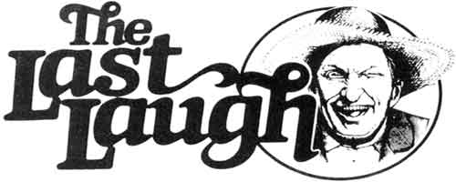

"If you lose a dime, look in the cuff of your pants ... that is, if you think the dime is worth the trouble. "
Anonymous
"A Rockport man received a telegram ,stating that his mother in-law's body had been found floating at the seashore with a lobster attached to each toe, and asking him to provide instructions for the disposition of the body.
"He wired back, `Sell the lobsters and set her out again!' "
N.A. Robinson
"A tourist arriving at an Indian reservation found himself surrounded by Indians when he climbed out of his car. A bit nervous, the traveler made a point of locking the vehicle's door's as he left it.
"Obviously puzzled, one of the crowd of bystanders spoke up. 'Why are you locking the door? 'he asked. 'After all, you're the only white man here!'"
Doc McConnell
"Last year we said things couldn't go on like this. Well, they didn't . . . they got worse. "
Will Rogers
Well sir, spring has finally arrived in Plumtree Crossin'. The wild onions are cowlickin' up outa most ev'ry front lawn on Main Street, an' overeager youngsters is runnin' around decked out in short pants an' goose bumps. As you kin well imagine, the warmin' weather's also lured the reg'lars down at the Gen'ral Store away from their winter's perches 'round the pot-bellied stove an'-on legs thet's one more spring less spry than they usta was-out to see jist how the world's shapin' itself up.
Now them of coots do require a little settlin'-in time afore they actually warm up to most any kind of change, an' the switchin' o' the seasons ain't no exception. Ol Ott Bartlett, in partic'lar, greeted the spring with all the grace an' poise of an underfed sow bear with an oversized litter of toothy cubs.
In point of fact, 'twern't but a week ago-when the ol loafers were over to the Lick Skillet River on one of them early-season fishin' junkets what usually do more damage to a jug er two of Purvis Jacobs' liquid life preserver than to the area's trout population-thet Ott let on how orn'ry he could be.
Seems thet the ol boy had jist missed bringin' in a fair-to-middlin' speckled trout, havin' broke his line on a snag in the process, when Lester Hogshead-the local game ward-encome a-strollin' up. Let me say here an' now thet most of the fish'n' game cops I've met have been fine folks. Ol' Les, howev'r, is known to be snake-mean an' turkey-stupid. An' no sooner had he walked up to Ott than he started in to ribbin' the ol gentleman.
"I see you lost yerself a fish. I s'pose it ain't surprisin', though . . . yer reflexes sure cain't amount to much ennymore. In fact, ain't fishin' a pretty strenuous activity fer a man of yer years?"
"Why, I cain't say I think so," answered Ott, cool an' calm, Lakin' the measure of his adversary. "Fact is, though I am a year or two past my prime, I figger thet since I was a good bit better man'n you in my younger days, I kin prob'ly still best you at whatev'r sort of compytition you might care to engage in . . . thet is, iffen you'd be bold enough to put a little wager on the matter."
Well, at thet, Lester set in to horse-laughin', lookin' around to the other tellers to see iffen they found the idea as all-fired comical as he did. They wasn't a chuckle comin' from enny of 'em, though, an' 'twern't long afore the warden's laugh died down an' he got sorta red in the face.
"Why, you old codger," he began, "I ain't never thought it right to take money from the feeble-minded, but-since it might do you some good to larn a lesson-I'll make an exception in yer case."
With then Lester picked hisself up a hunk of quartz about the size of a goose egg, reared back, an'-with a grunt that woulda done a Russian boar proud-up an' flung thet stone a good half o' th' way 'crost the river.
"There," he said, pantin' a bit from the effort, "I'll betcha a five-dollar bill you cain't match thet throw!"
It were a good toss, too, and I 'spect the tellers was a bit worried 'bout how Ott would git hisself outa the mess he appeared to be in. But the ol boy gist rubbed his chin fer a minute afore speakin' up.
'I s'pose thet ain't a bad throw, iffen you like flingin' pebbles around, but I was hankerin' for a bit of a challenge, myself. Why don't we let thet five-spot say I kin throw a growed man farther out into th' river than you jist tossed thet little bitty rock?"
Ol' lester set to howlin' agin. "yer on! " he hooted. "An' I've got you for sure this time, you stubborn. .
I don't b'lieve you do," Ott cut in afore the warden could finish the compliment, an'-grabbin! Lester by his web belt an' collar-the of codger (who ain't one to be trifled with, 81 years of age er no) give a heave an' landed his heckler a good six feet out inta the spring-cold, swirlin' water.
Now thet river were chilly, an' the current was movin' right along-all Swole up as it were with spring runoff-so Mister Hogshead was awhile gittin' hisself back up onta the bank. He did make it. though, an' (accompanied by hoots an' hollers from the same worthies what hadn't found enny humor in his banterin!) strode a-spittin' an' ashoverin' up to where Ott stood.
"Jist you hand over thet five dollars," Lester hissed. 'I've bested you fair an' square, fer all yer foolishness."
"I cain't see as how you've won thet money jist yet," replied Ott with what were beginnin' to resemble a grin. "You see, I never did say thet I'd do the job on the first try. Why, I got t'warm up a bit, don't I?"
So sayin', the ol feller grabbed the game warden agin' an', despite the fact thet his burden did a good bit more kickin' an' screamin' than it had on the previous throw, hurled the poor feller nigh onto eight feet out into the river.
Well, Lester's lips was turnin' blue, he was purely taken with the shakin' fits, an' he looked ev'ry inch a beaten man afore he made his way to the bank where Ott stood.
'I think I'm gitten' the feel of it now," the ol gentleman announced. "This time I'll git you there fer sure!"
Afore he could make a grab fer Lester, though, the feller scampered outa reach-scramblin' on all fours fer all he was worth-an' headed fer his truck. "You kin keep yer five dollars, you c-c-c-crazy of c-c-c-coot! " Les called back, chatterin' like a treed red squirrel.
Well, Ott jist turned to his fishin' rod an' tied on another hook while waitin' fer the laughter to die down. Presently he looked up at the rest of the tellers-with jist the slightest bit of satisfaction shinin' in his eye-an' shook his head in puzzlement.
"Don't thet beat all?" Mister Bartlett mused. "An' here I always thought thet feller were a sportin' man."
"When people lost sight of the way to live came codes of love and honesty."
Lao-Tsu
"Everybody says comedy is harder to do. That's become a truism by now, but it's wrong. Comedy is not harder. The hardest thing is to do good work, whatever it is. "
Woody Allen
"If 50 million, people say a foolish thing, it is still a foolish thing. "
Anatole France
"Beware what you set your heart upon, for it surely shall be yours. "
Ralph Waldo Emerson
|
 |
|
|